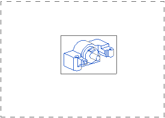
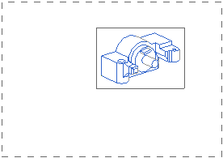

右击图纸页 “SHT2”。
您可以看到菜单选项中的打开以粗体显示。
任何快捷菜单中的粗体显示选项表示如果您双击该节点，将会执行这个选项。
双击第二个图纸页节点。

图纸页 “SHT2” 工作
右击图纸页 “SHT2”并选择编辑图纸页。
将打开图纸页对话框。
在大小组中，选择定制大小。
在高度输入框中键入7.0，在长度输入框中键入10.0。
在设置组的单位下方，选择英寸。
点击确定。

格式将被更改为更小的大小，部件在屏幕上变得更大。